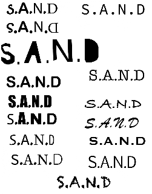

Branding
This work was for our branding assignment when we had to come up with brand names and ideas, as well as logos to go with them. We explored brand identity, visual consistency, and how typography and color choices communicate a brand's personality to an audience.
